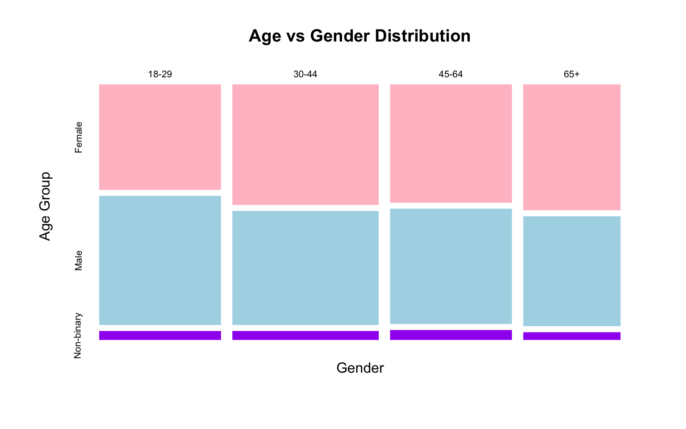
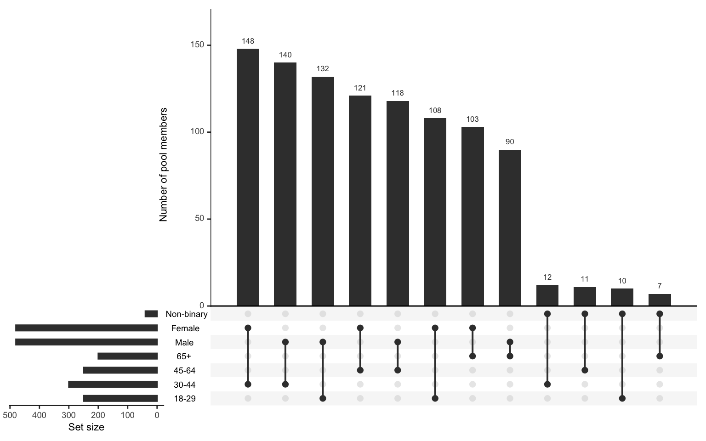
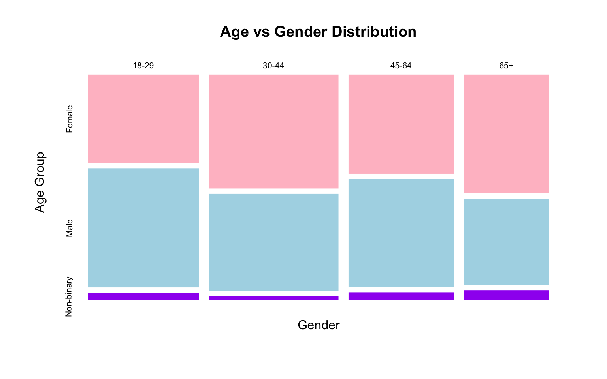
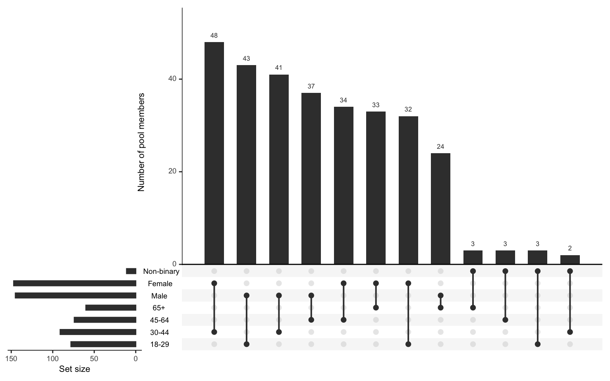
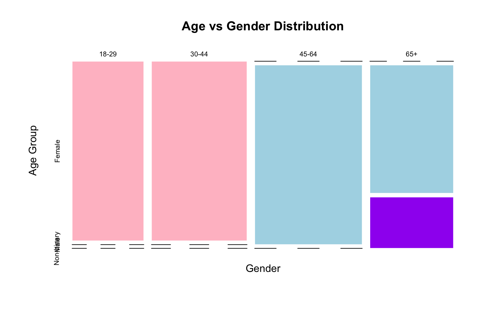
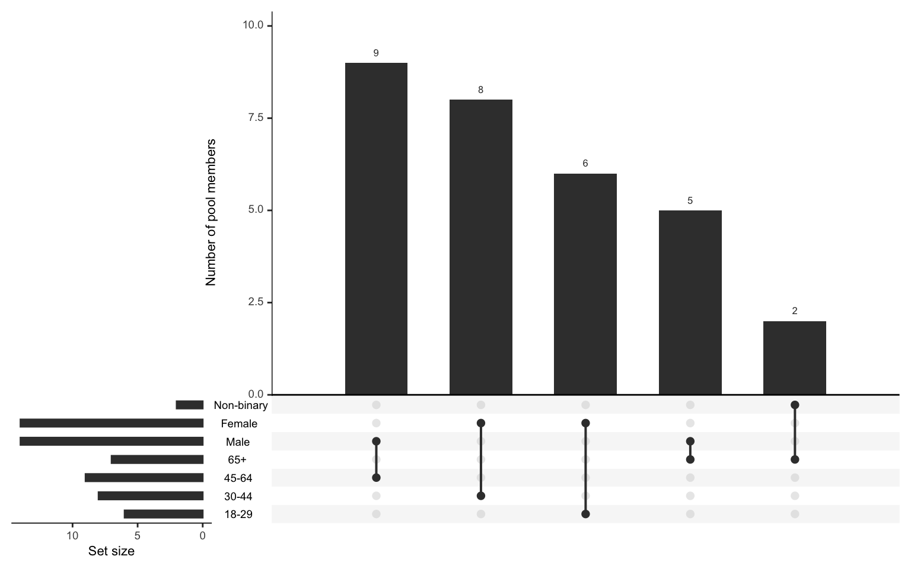

Female Male Non-binary
0.48 0.48 0.04
18-29 30-44 45-64 65+
0.25 0.30 0.25 0.20 My visualisation attempts!
Female Male Non-binary
0.48 0.48 0.04
18-29 30-44 45-64 65+
0.25 0.30 0.25 0.20
Female Male Non-binary
18-29 108 132 10
30-44 148 140 12
45-64 121 118 11
65+ 103 90 7

Female Male Non-binary
18-29 32 43 3
30-44 48 41 2
45-64 34 37 3
65+ 33 24 3

category name min max
1 Age 18-29 6 6
2 Age 30-44 8 8
3 Age 45-64 9 9
4 Age 65+ 7 7
5 Gender Male 14 14
6 Gender Female 14 14
7 Gender Non-binary 2 2
Female Male Non-binary
18-29 6 0 0
30-44 8 0 0
45-64 0 9 0
65+ 0 5 2
